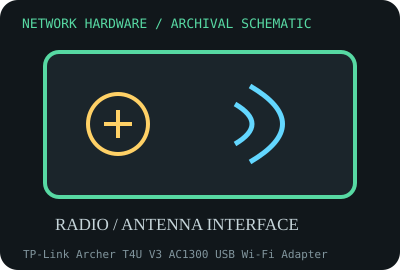

[ MODEL-SPECIFIC NETWORK HARDWARE RECORD ]
TP-Link Archer T4U V3 AC1300 USB Wi-Fi Adapter
USB 3.0 dual-band 2x2 802.11ac adapter with external high-gain antennas. This record identifies the stated model/revision; visually similar products may use different silicon or firmware.

IDENTIFICATION: Verify the full label, board revision, vendor/device IDs and regulatory markings before selecting firmware or drivers. Nominal PHY/link rates below are not measured application throughput.
Specifications and compatibility
| Subcategory | Wireless adapters |
|---|---|
| Exact model | TP-Link Archer T4U V3 AC1300 USB Wi-Fi Adapter |
| Interface and connector | USB 3.0 Type-A host connection; dual-band radio and two external antennas; chipset is revision dependent (V3 is commonly RTL8812BU-family). |
| Controller / PHY / radio | 2x2 802.11ac; advertised 867 Mb/s at 5 GHz plus 400 Mb/s at 2.4 GHz. Confirm the version label and USB VID/PID for driver identification. |
| Nominal throughput (not a test) | AC1300-class sum (867 + 400 Mb/s) across mutually exclusive bands; it is not a single-client measured throughput or Internet speed. |
| Measured throughput | No benchmark is published here. USB port generation, antenna placement, AP, driver, channel, interference and client distance must accompany any measurement. |
| Driver / OS / firmware | TP-Link supplies Windows drivers on revision-specific download pages. Linux support for RTL8812BU-based revisions may rely on kernel-version-specific or community drivers; verify current kernel support and signed-driver requirements. |
| Compatibility | Requires USB host port and OS support for the specific revision; USB 3.x ports can add radio noise near 2.4 GHz. Use the version-specific driver and region-specific radio settings. |
| Variant warning | Archer T4U V1/V2/V3/V4 components and drivers are not interchangeable; check label before download. Some later revisions use a different chipset despite identical shell and “AC1300” branding. |
Variant and operating notes
Archer T4U V1/V2/V3/V4 components and drivers are not interchangeable; check label before download. Some later revisions use a different chipset despite identical shell and “AC1300” branding.
TP-Link supplies Windows drivers on revision-specific download pages. Linux support for RTL8812BU-based revisions may rely on kernel-version-specific or community drivers; verify current kernel support and signed-driver requirements.
Throughput policy: vendor/standard rates are labeled nominal. This archive includes no measured benchmark for this specimen; do not interpret a link rate or aggregate port capacity as sustained payload performance.
Archival, ESD and preservation notes
Photograph underside version label, USB plug, antenna hinges and ID. Avoid bending antenna hinges or storing with pressure on the USB connector; use ESD-safe packaging and cap/protect from moisture.
Preserve the exact model/revision, serial/date code, firmware and driver versions, accessories, condition, source provenance, and source-document revision. Never retain access credentials or undocumented secrets in the public catalog.
Manufacturer and standards sources
- TP-Link Archer T4U V3 support/downloadsManufacturer or standards reference; match the complete model/revision before applying specifications.
- TP-Link Archer T4U product specificationsManufacturer or standards reference; match the complete model/revision before applying specifications.
- Wi-Fi Alliance technology overviewManufacturer or standards reference; match the complete model/revision before applying specifications.
Source coverage can be family-level; manufacturer documentation for the exact part number and hardware revision takes precedence. Standards describe protocol behavior, not a promise of real-world performance.